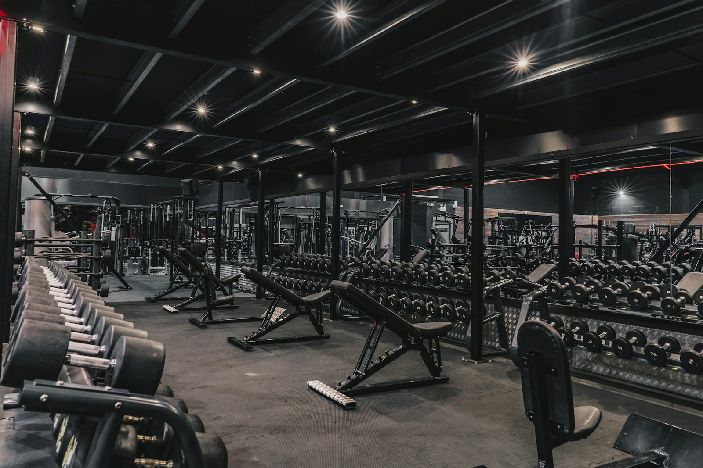

대표
최도현
생활스포츠지도사 2급. 장비 관리와 시설 점검을 맡습니다.

신림동 지하 1층에서 아홉 해째 문을 열어 두고 있습니다.
ABOUT
2018년에 120평으로 시작했습니다.
근처에 야간 근무자가 많아 새벽 이용이 꾸준했던 터라 2021년에 옆 공간을 더 빌려 310평으로 넓히면서 프리웨이트존을 따로 뺐습니다.
장비는 한꺼번에 바꾸지 않습니다. 해마다 예산을 나눠 조금씩 교체하는 쪽을 택했고 올해 들어온 것은 러닝머신 3대와 케이블 머신 1대입니다.
트레이너는 세 명입니다. 데스크가 열려 있는 10시부터 22시까지 번갈아 상주합니다.
홈페이지와 데스크에 같은 금액을 붙여 두고 상담을 길게 받아야 할인이 나오는 구조는 만들지 않았습니다.
월요일 오전마다 케이블과 벨트, 볼트를 하나씩 확인해 기록지에 적고 고장 난 기구에는 그 자리에서 사용 중지 표시를 붙입니다.
22시 이후에는 데스크가 비지만 원판과 덤벨 정리는 마지막 순찰에서 확인합니다. 새벽에 오셔도 제자리에 있게 하려는 규칙입니다.
데스크가 열려 있는 10시부터 22시까지 번갈아 상주합니다.
대표
생활스포츠지도사 2급. 장비 관리와 시설 점검을 맡습니다.
오전 담당
처음 오신 분께 기구 사용법을 20분 동안 안내합니다.
저녁 담당
평일 저녁 서킷 수업을 진행합니다.
OPEN 24 HOURS,SINLIM STATION
야간에는 직원 없이 무인으로 운영합니다. 기구는 쓰신 자리에 정리해 주십시오.